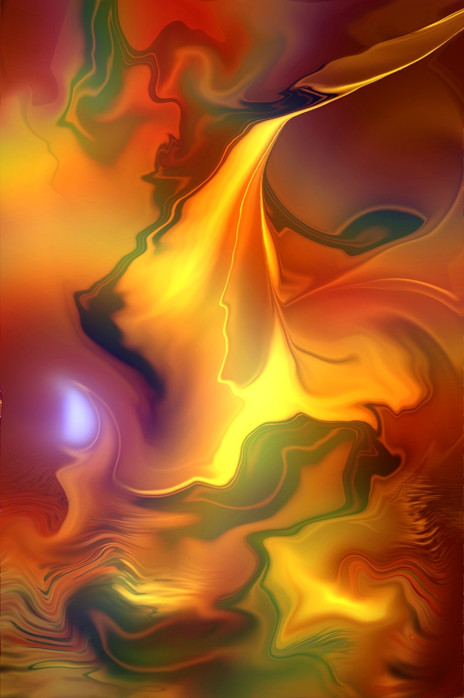
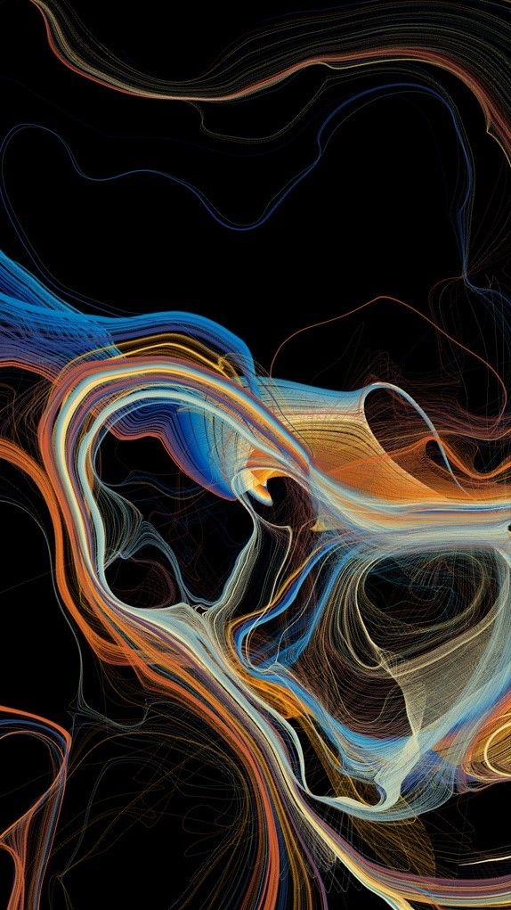
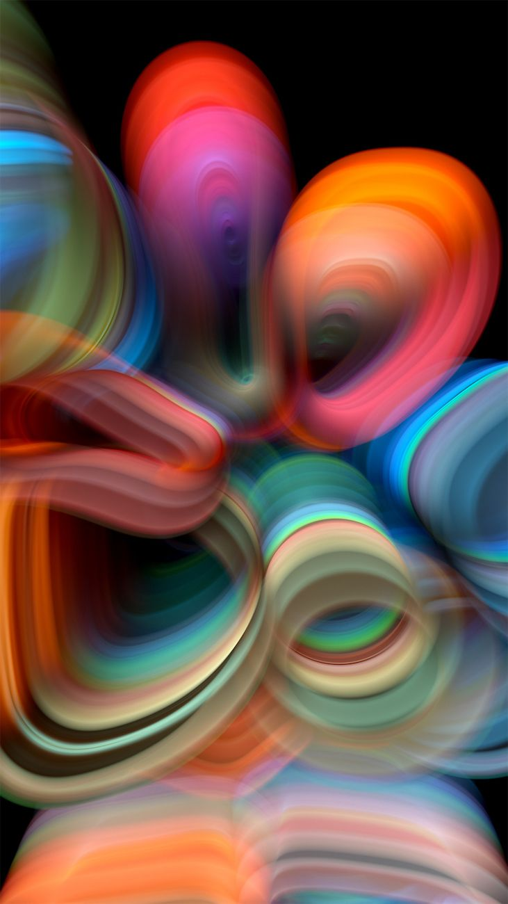
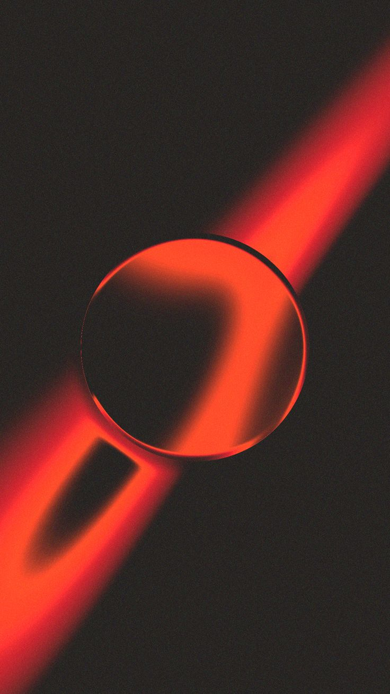

.png)

Le Rôle des Visualisations dans l'Éducation Musicale
Les visualisations musicales servent d'outils pédagogiques essentiels pour aider les étudiants à saisir des concepts complexes de théorie musicale, de rythme et de structure.
Read More
La Science Derrière les Visualisations Musiques
Cette analyse explore la science fondamentale des visualisations musicales, incluant la physique du son, les algorithmes de traitement du signal, et les principes de l'informatique graphique.
Read More
Visualisation de la Musique Classique : Techniques Modernes pour une Expérience Immersive
Les technologies de visualisation modernes sont utilisées pour enrichir les expériences d'écoute de musique classique, avec des exemples de concerts intégrant des projections visuelles synchronisées à la musique.
Read More
L'Art des Ondes Sonores : Illustrations Basées sur les Fréquences et les Formes d'Onde
Une exploration de la science des ondes sonores et de leur utilisation pour créer des illustrations artistiques, y compris des spectrogrammes et des formes d'onde.
Read More
Les Algorithmes de Visualisation Musicale : Comment l'IA Transforme l'Art Audio-Visuel
L'étude de l'utilisation des algorithmes d'intelligence artificielle pour générer des visualisations musicales en temps réel, transformant les performances live et les expériences d'écoute.
Read More
L'Impact de la Synesthésie sur la Création Musicale et Visuelle
Une discussion sur l'influence de la synesthésie, où une stimulation sensorielle provoque des expériences dans une autre modalité, sur la création artistique, notamment dans la musique et les visualisations.
Read More